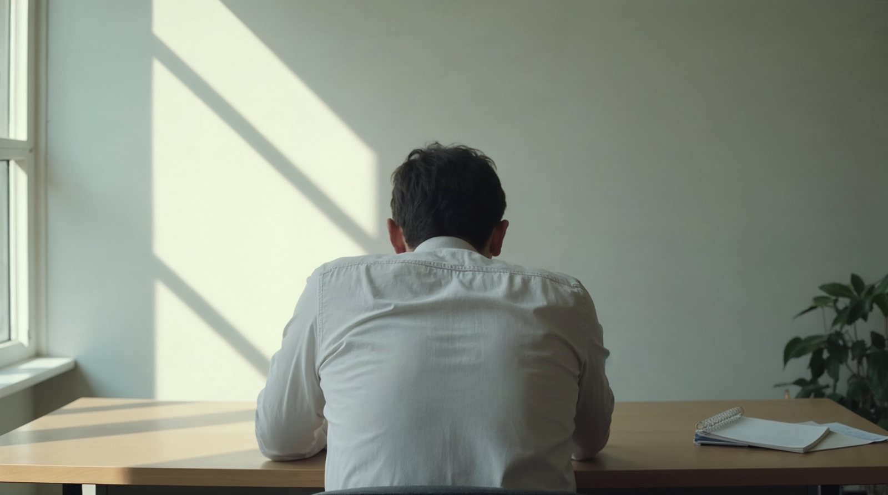

이종호 한의사 감수좋은꿈참사랑한의원 대표원장 (한의사 면허번호 19769)발행 2026-11-24 · 수정 2026-11-24
이 글의 차례
독서대로 책을 눈높이 가까이 올리고 의자 높이를 맞추는 것만으로 날개뼈 사이 뻐근함이 덜하다는 분이 많습니다. 스터디카페와 독서실 책상은 자리마다 높이가 달라, 책을 내려다보며 몇 시간씩 공부하다 보면 날개뼈 사이가 타는 듯 뻐근하다는 수험생이 많습니다. 팔 저림이나 가슴 통증이 함께 있다면 먼저 확인이 필요합니다.
왜 이런 불편이 생길 수 있나요
- 고개를 숙일수록 머리 무게를 버티느라 목 뒤와 등 위쪽 근육이 더 많이 일하게 됩니다.
- 책상이 낮으면 어깨가 앞으로 말리고 등이 굽어 날개뼈 사이가 늘어난 채로 긴장하기 쉽습니다.
- 오래 같은 자세로 있으면 근육이 굳어 타는 듯한 뻐근함으로 느껴지기도 합니다.
- 노트북 화면이 낮으면 고개 숙임이 더 깊어질 수 있습니다.
먼저 이렇게 여쭙니다
- 책을 볼 때 고개를 얼마나 숙이나요?
- 의자와 책상 높이가 몸에 맞나요?
- 날개뼈 사이와 목 뒤 중 어디가 더 뻐근한가요?
- 팔이나 손이 저린 느낌이 있나요?
일상에서 먼저 해 볼 수 있는 것
- 독서대를 써서 책을 눈높이 가까이 올리기
- 의자 높이를 맞춰 팔꿈치가 책상과 비슷한 높이가 되게 하기
- 50분마다 가슴을 펴고 날개뼈를 모으는 동작 하기
- 노트북은 받침대로 화면 높이기

한의원에서 함께 살필 수 있는 경우
- 날개뼈 사이가 자주 뻐근한 경우 앉는 자세와 척추의 균형을 함께 살핍니다.
- 목과 등이 함께 굳는 경우 근육의 긴장과 생활 습관을 함께 살핍니다.
- 공부 시간이 길어질수록 두통이 함께 오는 경우 목·어깨 긴장과 잠을 함께 살핍니다.
좋은꿈참사랑한의원에서는 서 있는 모습과 앉는 자세를 직접 보며 척추·골반의 균형을 살피고, 필요하다고 판단될 때 초음파로 아픈 부위를 확인합니다. 추나와 침 가운데 지금 상태에 맞는 방법을 정하고, 귀가 전에는 집에서 할 수 있는 자세 조정을 알려 드립니다.
이렇게 기록해 오시면 상담이 쉬워집니다
- 주로 앉는 자리의 책상·의자 높이와 독서대 사용 여부
- 뻐근한 위치(날개뼈 사이, 목 뒤, 어깨)와 심해지는 시간
- 팔이나 손 저림, 두통이 함께 있는지
- 하루 공부 시간과 쉬는 간격
이런 증상은 먼저 확인이 필요합니다
- 팔이나 손이 저리고 힘이 빠지는 경우
- 가슴 통증이나 숨 가쁨이 함께 있는 경우
이런 신호가 있으면 한의원보다 가까운 병원이나 응급실을 먼저 찾으세요.

여쭙는 것
- 책을 볼 때 고개를 얼마나 숙이나요?
- 의자와 책상 높이가 몸에 맞나요?
- 날개뼈 사이와 목 뒤 중 어디가 더 뻐근한가요?
생활에서 해 볼 것
- 독서대를 써서 책을 눈높이 가까이 올리기
- 의자 높이를 맞춰 팔꿈치가 책상과 비슷한 높이가 되게 하기
- 50분마다 가슴을 펴고 날개뼈를 모으는 동작 하기
한의원에서 함께 살필 것
- 날개뼈 사이가 자주 뻐근한 경우 앉는 자세와 척추의 균형을 함께 살핍니다.
- 목과 등이 함께 굳는 경우 근육의 긴장과 생활 습관을 함께 살핍니다.
- 공부 시간이 길어질수록 두통이 함께 오는 경우 목·어깨 긴장과 잠을 함께 살핍니다.
먼저 확인이 필요한 신호
- 팔이나 손이 저리고 힘이 빠지는 경우
- 가슴 통증이나 숨 가쁨이 함께 있는 경우
한눈에 보는 표
| 구분 | 핵심 |
|---|---|
| 여쭙는 것 | 책을 볼 때 고개를 얼마나 숙이나요? 의자와 책상 높이가 몸에 맞나요? |
| 생활에서 해 볼 것 | 독서대를 써서 책을 눈높이 가까이 올리기 의자 높이를 맞춰 팔꿈치가 책상과 비슷한 높이가 되게 하기 |
| 한의원에서 함께 살필 것 | 날개뼈 사이가 자주 뻐근한 경우 앉는 자세와 척추의 균형을 함께 살핍니다. 목과 등이 함께 굳는 경우 근육의 긴장과 생활 습관을 함께 살핍니다. |
| 먼저 확인이 필요한 신호 | 팔이나 손이 저리고 힘이 빠지는 경우 가슴 통증이나 숨 가쁨이 함께 있는 경우 |
자주 묻는 질문
독서대가 정말 도움이 되나요?
고개를 숙이는 각도를 줄여 주어 목과 등의 부담을 나누는 데 도움이 될 수 있습니다.
스트레칭만 해도 괜찮아질까요?
가벼운 뻐근함은 자세와 스트레칭으로 편해지기도 하지만, 계속되면 진찰을 받아 보는 것을 권합니다.
매일 자리가 바뀌는 스터디카페라면 어떻게 하나요?
접이식 독서대와 얇은 방석을 가지고 다니면 자리마다 높이 차이를 줄일 수 있습니다. 앉자마자 의자 높이부터 맞추는 습관을 들여 보세요.
진료 시간은 어떻게 되나요?
좋은꿈참사랑한의원은 평일 09:30~20:00(점심 13:00~14:00), 토·일·공휴일 09:30~15:00에 진료합니다.
좋은꿈참사랑한의원은 재진 때 지난번 이야기부터 이어서 여쭙니다. 진료시간과 예약은 오시는 길에서 확인하세요.
어디서 상담받을 수 있나요?
좋은꿈참사랑한의원은 서울 동작구 만양로2길 2 신성빌딩 3층·5층(서울 동작구 상도동, 7호선 상도역 3번 출구 근처)에 있습니다. 한의사 3명(이종호 대표원장, 조영기 수석진료원장, 정원영 진료원장)이 진료합니다. 진료시간은 평일 09:30~20:00(점심 13:00~14:00), 토·일·공휴일 09:30~15:00이며, 방문 전 전화로 확인을 권합니다. 예약은 네이버 예약, 카카오톡 상담, 전화 02-815-7510로 받습니다.
이 글은 일반적인 건강 정보이며 개인의 진단이나 치료를 대신하지 않습니다. 증상이 있거나 복용 중인 약이 있다면 진료를 통해 확인하세요. 치료 효과는 개인마다 다를 수 있습니다.
작성 기준: 일반적으로 알려져 있는 건강 정보를 참고해 정리했습니다(대표원장 감수). 증상 기록은 1~2주 동안 하루 1회, 비슷한 시간에 적어 오시면 지난 상태와 비교하기 쉽습니다.